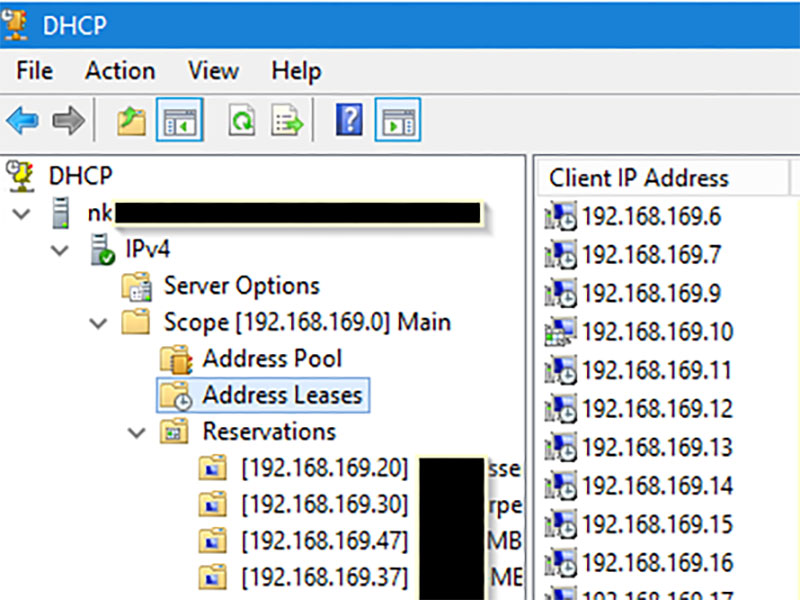

I recently ran in to an issue where I needed to convert a reasonably large DHCP database from a Windows Server in to a Cisco CLI to allow the Cisco to take over DHCP roles for a subnet. I found nothing that realy automated this task, even using the exported XML file. So knowing that this was the second time I needed the tool, and likely to need it again, even if it was for smaller tasks, I set about coding it in Powershell. It is the scripting system well supported in Windows land.
The current version of the script can be found on my GitHub repository: Convert-WindowsDHCPToCisco
Still ha smany DHCP options that it hasn't been setup to hanle at this point but it does follow the basic ones that most of us use.
Currently handles DHCP Options
| Code | Option Description | Cisco Output |
|---|---|---|
| 3 | Default Gateway | default-router |
| 4 | Time Server | ignoring |
| 6 | Domain Nameserver | dns-server |
| 15 | Domain Name | domain-name |
| 42 | NTP Servers | option 42 ip |
| 51 | Lease time | ignoring |
| 66 | TFTP Server | next-server |
| 67 | Boot filename | bootfile |
| 81 | MS DHCP Name Protection | ignoring |
| 121 | Static routes | option 121 hex |
| 161 | FTP Server | option 161 ip |
| 162 | Path | option 162 ascii |
| 252 | Proxy PAC URL | option 252 asicc |